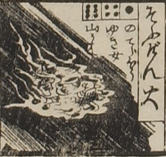

叢原火；ソウゲンビ，宗玄火；ソウゲンビ，男；オトコ

叢原火または宗玄火。火の玉の真ん中に厳しい男の顔が見える。
出典：親書誌：U426_nichibunken_0082：新版妖怪飛巡雙六；シンパンヨウカイトビマハリスゴロク／日付：2007／資源識別子：U426_nichibunken_0082_0016_0000
Copyright (c)2010- International Research Center for Japanese Studies, Kyoto, Japan. All rights reserved.